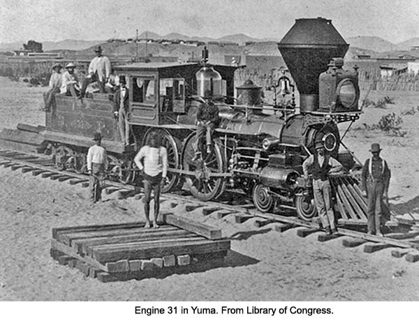
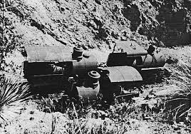

The first railroad in Arizona was built by the Southern Pacific railroad into Yuma in 1877, and the first locomotive in Arizona was Southern Pacific No. 31. Despite the fact the engine got there in 1877, operational capabilities wouldn't come until 1878. This set up Arizona to be one of the most diverse states in the U.S. when it came to railroads for a good 70 years.
The first narrow gauge railroad in Arizona was built to serve a copper mine by the Arizona Copper Company. The railroad was 20 inch gauge, meaning there were 20 inches between the rails. The railroad had ten engines, and five survive. When the railroad was regauged to 3 foot gauge, three engines were put at the top of the mine to work the incline. They were abandoned in place, and remained there until being removed almost 60 years later.
Following the boom in copper during the 1900s, many other railroads were started, including the Magma Arizona Railroad. The Magma was owned by the Magma Copper Company, and it was one of the last railroads in the United States to run steam locomotives, only retiring its last steam engine in 1968. Originally built to 3ft gauge, it was regauged to standard gauge (4'8 1/2") in the 1920s. The little train on the bottom is Magma Arizona number 10, a Baldwin Locomotive Works DRS 6-6-1500, pulling some Southern Pacific hoppers.